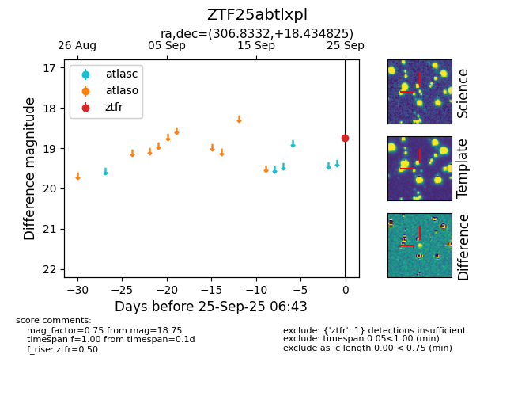

FINK: ZTF25abtlxpl
Lasair: ZTF25abtlxpl
ALeRCE: ZTF25abtlxpl
ZTF25abtlxpl (ztf,fink)
equatorial (ra, dec) = (306.8332,+18.43483)
galactic (l, b) = (60.7407,-11.47072)

last ztfr=18.75
1 ztfr detections